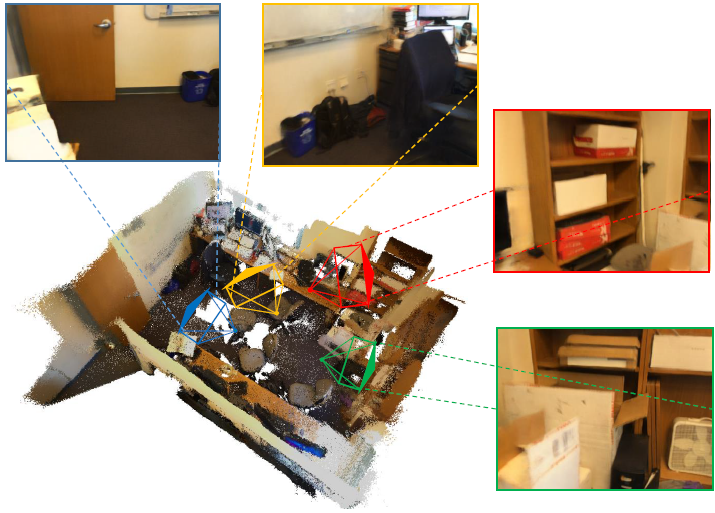
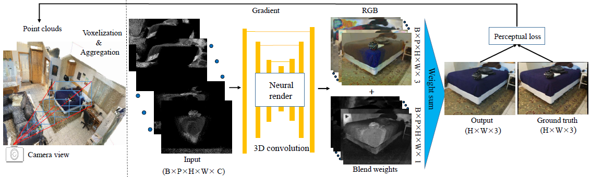
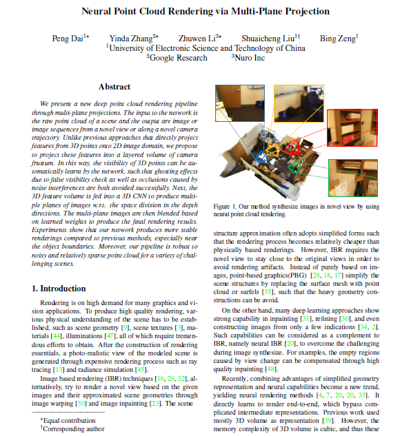

| Peng Dai* | Yinda Zhang* | Zhuwen Li* | Shuaicheng Liu | Bing Zeng |
| University of Electronic Science and Technology of China |
| Google Research |
| Nuro.Inc |
|  |
| Our proposed method synthesize images in novel view by using neural point cloud rendering. |
Abstract
We present a new deep point cloud rendering pipeline
through multi-plane projections. The input to the network is
the raw point cloud of a scene and the output are image or
image sequences from a novel view or along a novel camera
trajectory. Unlike previous approaches that directly project
features from 3D points onto 2D image domain, we propose
to project these features into a layered volume of camera
frustum. In this way, the visibility of 3D points can be automatically
learnt by the network, such that ghosting effects
due to false visibility check as well as occlusions caused by
noise interferences are both avoided successfully. Next, the
3D feature volume is fed into a 3D CNN to produce multiple
planes of images w.r.t. the space division in the depth
directions. The multi-plane images are then blended based
on learned weights to produce the final rendering results.
Experiments show that our network produces more stable
renderings compared to previous methods, especially near
the object boundaries. Moreover, our pipeline is robust to
noisy and relatively sparse point cloud for a variety of challenging
scenes.
Framework
|  |
Video
Paper
|  |
"Neural Point Cloud Rendering via Multi-Plane Projection", |
Last updated: April 2020